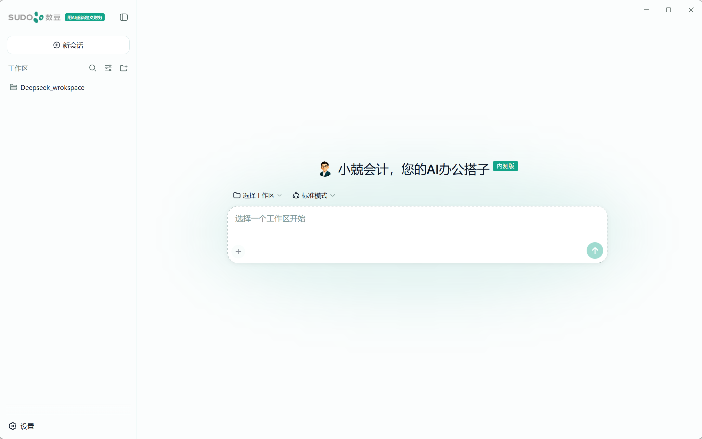

Windows 桌面端
v0.1.2
小兢会计 您的 AI 办公搭子
这是基于官方 DeepSeek Harness 构建的桌面端，开箱即用。
面向日常办公与财务工作场景。完成 API Key 配置后，即可在桌面端调用 AI 能力并管理本地工作区。
SHA256
424B5202685ABC04F8E140968C05F7430BDE0F2765B6E1F36E3F62D8BAE14E8C
当前为内部测试版本，仅供授权用户使用。
